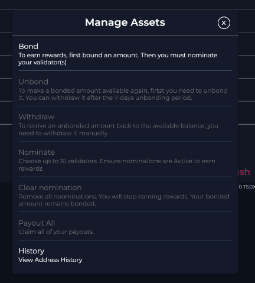
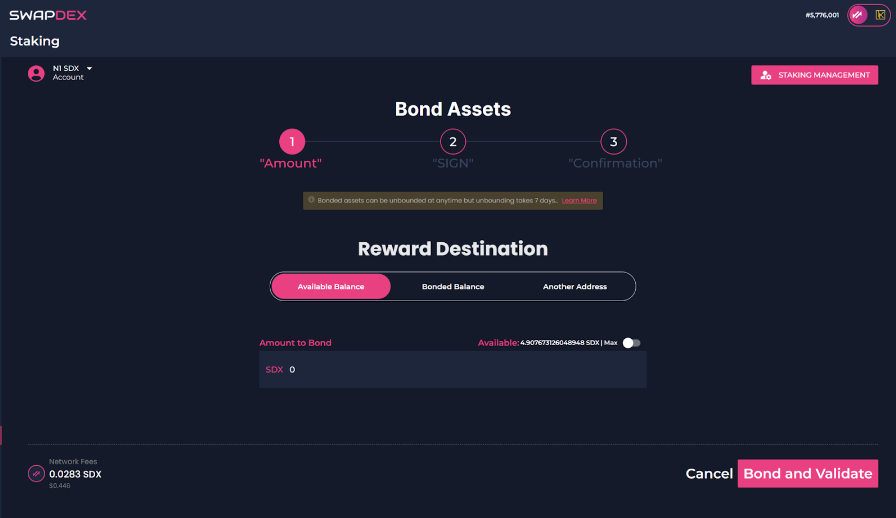

About SwapDex Network
Welcome to SwapDex, your gateway to decentralized finance. We offer limit order decentralized exchanges for precision trading, an NFT Marketplace and Crypto Shops for digital art and collectibles, seamless integration with 3rd Party Dapps, and secure wallet connectivity, ensuring "your key, your funds" - all in one revolutionary blockchain platform.
Tokenomics
What are the tokenomics for SDX?
- Starting Supply: 200,000,000 SDX
- Circulating Supply: 110 Million SDX
- Foundation: 50 Million SDX
- Treasury: 40 Million SDX (fully released)
How to Add SDX in MetaMask
- SwapDex RPC URL:
https://rpc.swapdex.network/ - Chain ID:
230 - Currency Symbol:
SDX - Explorer: SwapDex EVM Explorer
Where to Buy SDX
Official Foreign Addresses of Tokens (Bridge)
- SDX on BSC (bSDX):
0x351494731D28f35d648C200b35E628aecba3E577 - SDX on ETH (SDX):
0x6b5FeC1351C9ff830db0ebE343a235976b6352Ea
Official Links
- Desktop Wallet (Mac, Linux, Windows): Download here
- Discord: Join the community
- Website: Visit SwapDex
- Dashboard: Access the app
- Documentation: Read the docs
- EVM Explorer (SDX): Explore
- Explorer (Substrate): Explore
- Twitter: Follow us
- YouTube: Watch our videos
- Telegram: Join the group
- Forum: Join the discussion
- iPhone App: Download on the App Store
- Android App: Get it on Google Play
- Node Documentation: Learn more
- Status Page: Check status
- Faucet: Go to Discord and type
!jack helpin the faucet channel.
SwapDex White Paper
STAKING on SwapDex and Kusari Networks
Welcome to the comprehensive guide on staking within the SwapDex and Kusari networks. Both networks utilize a Proof-of-Stake consensus mechanism, where staking is a fundamental aspect.
What is Staking?
Staking involves locking your SDX or KSI tokens for a specific purpose and duration to support network security and operations. In return, participants earn rewards. There are two primary ways to engage in staking:
- Nominating: Support validators by staking tokens.
- Validating: Run a node to participate in network consensus.
Roles in Staking
Validators
Validators are responsible for creating new blocks and validating transactions. They are crucial to the network's security. Validators put their tokens at stake as collateral.
Rewards for Validators
The network is designed to distribute rewards equally among all validators. However, validators can set a commission for their services. The remaining rewards are distributed proportionally among the nominators.
Nominators
Nominators support validators by staking their tokens. They share in the rewards earned by validators.
Rewards for Nominators
Rewards are distributed pro-rata among the nominators after deducting the validator's commission. This means that your share of the rewards will increase with the number of tokens you have staked.
Understanding Staking
Nomination Period
Anyone can become a validator candidate. Nominators can vote for validator candidates they trust. At the beginning of each era, the network selects the highest nominated validator candidates as the active set for the next era.
Staking Rewards Distribution
Rewards are distributed at the end of each era. Every validator pool receives essentially the same amount of tokens for equal work. However, each validator can set a customized commission. The rest is paid pro-rata to the nominators.
Slashing
Slashing occurs if a validator fails to perform its duties or acts maliciously. Slashed tokens are usually added to the Treasury.
Accounts for Staking
For added security, it is recommended to create two types of accounts:
- Stash Account: This is your cold wallet. It holds your funds and delegates certain functions to the controller account.
- Controller Account: This is your hot wallet. It acts on behalf of your stash account and is used for making decisions about nominating or validating.
Risks and Mitigations
Liveliness
Validators must be online and responsive. If a validator is offline, it may be chilled (temporarily removed from the validator set) and won't receive block rewards.
Equivocation
This occurs when a validator illicitly creates multiple blocks for the same slot. It is considered a serious offense and is punished by slashing.
Misconduct
This includes behaviors that pose a security or monetary risk to the network. Misconduct is severely punished by slashing.
How to Mitigate Risks
- Monitor Your Node: Use monitoring tools to keep track of your node's status.
- Secure Your Server: Ensure that your server is secure. Regularly update your software and protect your server with firewalls.
- Be Cautious with Validator Selection: If you are a nominator, choose validators with a good reputation and performance.
Conclusion
Staking is an essential component of the SwapDex and Kusari networks. It is crucial for network security and offers an opportunity to earn rewards. However, it comes with responsibilities and risks. Whether you choose to be a nominator or a validator, it is important to understand the mechanics of staking, monitor your investments, and take steps to mitigate risks. ``The above content is a more detailed and structured version of the information you provided. It covers the essentials of staking within the SwapDex and Kusari networks, including the roles of validators and nominators, how staking rewards are distributed, the concept of slashing, and the importance of security and risk mitigation. This format aims to provide a clear and comprehensive understanding of staking for anyone interested in participating in the SwapDex or Kusari networks.
How To Bond And Nominate Your SDX
-
Go to the "Validators" tab in the left menu and select “Staking”.
-
On the top left, select the account that holds the SDX tokens that you would like to stake (Substrate accounts only).
-
Next, select “Staking Management” on the top right. Here you will have the options to bond, stake, withdraw, etc.
-
Select “bond” to get started.
-
Firstly, choose your reward destination. There are 3 options:
- Available balance will add your rewards directly to your wallet.
- Bonded balance will add your rewards to your bonded amount, therefore, increasing the amount you have bonded (staked).
- If you choose another address, your rewards will be sent to an address of your choice.
 -
Underneath is your option to bond the amount of SDX that you want to stake on a validator. Once you have chosen how much you want to stake, select “Bond And Validate”.
-
You will then be asked to confirm. To confirm, select “Sign”.

Note: With our native mobile and desktop apps, your wallet signatures will happen automatically, but with our web app, you will need to manually sign the transactions when you get a pop-up. You will be notified on the final step once your transaction is successful. Return to the staking page.
-
-
Now you have selected the wallet you want to bond from and how much you want to bond, you will now need to select the wallets that you would like to bond your SDX to.
-
You will find the list of the current validators to choose from under “Overview” on the left in the staking menu.
-
Choose the validator/s that you would like to bond your SDX tokens to. You can choose up to 16 validators per wallet that you use to stake with.
Note: Choose your validators wisely: Part of your bonded assets may be irrevocably lost if the validator does not behave appropriately.
-
First, make sure you have your chosen wallet selected on the top left, it may revert back to the first wallet in the list if you have more than one.
-
Now go back to “Staking Management” on the top right and select “Nominate”.

-
-
Once you have read the page and are happy to bond your tokens, select “Continue”.
-
Now choose the validators that you wish to nominate your SDX tokens to.

Clearing Your Nominations
- If you wish to clear your nominations, you do so by selecting the account that you would like to clear your nominations from and select “Clear Nominations”.
Run a Validator
This guide provides instructions on how to run a SwapDex validator node. There are two options available:
Option 1: Scripted Installation
Link to Scripted Installation Page
In this option, you can run a script that automates the installation process and provides prompts for necessary information. It simplifies the setup and configuration of your validator node.
To use the scripted installation option, follow the instructions provided in the Scripted Installation page.
Option 2: Manual Installation
Link to Manual Installation Page
If you prefer more control over the installation process and want to configure each step manually, you can choose the manual installation option. This option involves tasks such as upgrading your server, installing packages, and setting up the validator node.
Refer to the Manual Installation page for detailed instructions on how to perform the manual installation process.
Choose the option that suits your requirements and proceed with the respective guide to run your substrate validator node.
Note: It's recommended to have basic knowledge of server administration and networking concepts for both installation options.
Scripted Installation
To install SwapDEX, you can use the provided installation script. This guide will walk you through the process step by step.
Prerequisites
- Make sure you have root access to the system.
Instructions
- Run the following command as root to download the installation script:
wget https://raw.githubusercontent.com/starkleytech/swapdex-install-script/main/install_swapdex.sh && chmod +x install_swapdex.sh && ./install_swapdex.sh
This command will download the script, make it executable, and execute it.
- The script will perform several tasks, such as checking the OS compatibility, installing required packages, configuring the firewall, downloading the SwapDEX binary, creating a service file, and starting the service.
You will see the script's output during the installation process, which may include prompts for user input.
Here is an example output of the script:
# Check if the script is executed as root ... # Check if the OS is Ubuntu 22.04 or Rocky Linux 8 ... # Prompt user if they want to install Kusari or SwapDEX ... # Check if previous SwapDEX or Kusari was active and prompt user if they want to delete the database ... # Create SwapDEX user if it doesn't exist ... # Install required packages ... # Configure and enable the time server ... # Configure the firewall ... # Install and configure fail2ban ... # Download the SwapDEX binary ... # Create SwapDEX service file ... # Prompt user for node name and replace placeholder in service file ... # Start and enable the service ... # Check if the node is syncing ... # Prompt the user if they want to generate a session key ...
The script will provide instructions and ask for user input at various stages. Please follow the prompts and provide the required information.
- Once the installation process is complete, SwapDEX should be installed and running on your system. You can monitor the installation progress and check the logs for more information.
It's important to note that during the installation process, the script may prompt you for additional information or ask for confirmation before proceeding. Please read the prompts carefully and respond accordingly.
If you encounter any issues during the installation process, please refer to the script's output and logs for error messages or contact the support team for assistance.
Note: It's recommended to have basic knowledge of server administration and networking concepts before proceeding with the installation.
Wallets Management
This guide provides instructions on how to create a SwapDex wallet. There are two options available:
- Option 1: Creating A Wallet With Our Desktop And Mobile Apps
- Option 2: Creating A Wallet With Our Web App
Option 1: Creating A Wallet With Our Desktop And Mobile Apps
Link to Desktop and Mobile Apps Wallet Creation Page
In this option, you can use our dedicated desktop and mobile applications to create a SwapDex wallet. These applications provide a user-friendly interface and guide you through the wallet creation process step by step.
To create a wallet using our desktop and mobile apps, follow the instructions provided in the Desktop and Mobile Apps Wallet Creation page.
Option 2: Creating A Wallet With Our Web App
Link to Web App Wallet Creation Page
If you prefer to create your wallet through a web browser without installing any additional applications, you can use our web app. This option provides you with the flexibility to create and manage your wallet from any device with internet access.
Refer to the Web App Wallet Creation page for detailed instructions on how to create a wallet using our web app.
Choose the option that suits your requirements and proceed with the respective guide to create your SwapDex wallet.
Note: It's recommended to have a secure internet connection and take necessary precautions to protect your private keys and wallet information.
What Is A Wallet?
What Is A Mnemonic Phrase?
Mnemonic Phrases, also known as seed phrases or recovery phrases, are a sequence of 12 or 24 random words that provide the data needed to recover a lost or broken crypto wallet. By having this phrase, you can access all your cryptocurrencies within the wallet even if you lose or delete it. It's critical to keep your phrase words secure because anyone with possession of your seed phrase also has access and can authorize moving or selling your cryptocurrency. We highly recommend writing your seed phrase down on a physical piece of paper and storing it in a secure location that no one else can gain access to.
The seed phrase is the master key to your crypto funds in a wallet, and you are responsible for its safety. Seed phrases cannot be recovered. If you lose your phrase, you will not be able to access this crypto wallet again.
Crypto wallets are also chain-specific. SwapDEX is built with Substrate Technology, so you can use your existing substrate seed phrase with our network, or you can use your SwapDEX seed phrase with other Substrate-based chains. We also have an EVM (Ethereum Virtual Machine). If you want to use that, you will need a seed phrase. If you use our web app instead of our native mobile app or desktop apps, you will need to have Metamask and Polkadot.js extensions with wallets set up. It is recommended to use our native apps.
What is a crypto wallet?
A crypto wallet is software or hardware that enables users to store and use their cryptocurrency. Cryptocurrency has no tangible currency (no paper money) to place within a physical wallet or purse. Cryptocurrency exists on blockchains.
A crypto wallet provides visibility into how much cryptocurrency the user owns. A crypto wallet also enables users to send and receive cryptocurrency transactions and to connect to decentralized applications. For many users, a crypto wallet is the primary mechanism for managing cryptocurrency balances.
With SwapDEX, because we are a decentralized exchange, you will be using your wallet to connect with our chain to gain access to our decentralized exchanges and our marketplace through one of our apps. Unlike centralized exchanges, your crypto will not leave your wallet. Your crypto will always be in your possession. That's what makes SwapDEX so special.
Types of crypto wallets
There are two main types of crypto wallets: hot wallets and cold wallets. The primary difference between them is their internet connectivity.
- Hot wallets (web wallets, desktop/mobile wallets) are connected to the internet, making them more user-friendly but less secure. They are suitable for regular transactions and trading.
- Cold wallets (paper wallets, hardware wallets) are stored offline, providing improved security by reducing the risk of online attacks. They are better suited for long-term holdings.
Hot wallets are more likely to be used by traders for regular transactions, and cold wallets are more suitable for long-term holdings. Hot wallets are simple to set up, and the funds are easy to access, making them convenient for trading. Cold wallets are hack-resistant, making cold storage suitable for holding crypto for longer periods of time. As a protection method, it's a good idea to only store a small percentage in hot wallets and larger amounts in cold storage.
Custodial vs. noncustodial wallets
Crypto wallet types are either custodial or noncustodial. The fundamental difference between custodial and noncustodial wallets is control.
-
Custodial wallets are crypto wallets in which the custody is managed by a third party, typically a centralized cryptocurrency exchange. Custodial wallets are suitable for users who don't want to fuss too much with security and who are not concerned with trusting a third party to hold their crypto. However, it's generally not advised to keep large amounts of cryptocurrency in a custodial wallet due to potential risks like hacks or even the exchange going bankrupt.
-
Noncustodial wallets are crypto wallets where the custody is held by the individual who has the private keys for their crypto assets and is responsible for securing them. Noncustodial wallets don't require a user to trust a third party for account security, but they do require a substantial amount of self-trust. Remember, if a private key is lost or compromised, a user's funds can be drained or otherwise rendered irretrievable.
Both custodial and noncustodial wallets have numerous benefits and potential disadvantages, depending on the type of wallet being used. However, there is a risk associated with both custodial and noncustodial types of wallets, with the greatest risk being the potential for theft, fraud, or cyber attacks.
Web App
To use our web app, you will need to install both the Metamask and Polkadot.js extensions and set up a wallet in each of them. These extensions are not built into our web app like they are in our native apps. Here are the links to download and install them:
Once you have set up your wallets, follow these steps:
-
Open our web app.
-
Expand the Wallets section on the left side menu of the SwapDEX Dashboard and select "Account".
-
Metamask will pop up, prompting you to sign in. Sign in to your Metamask wallet.
-
After signing in, you will be prompted to "Connect with Metamask". Select "Next".
-
You will then be asked if you would like to add the SwapDEX network to Metamask. Select "Accept".
-
Next, you will be asked to connect to our network. Select "Connect".
- Your Polkadot.js extension will automatically add your Substrate accounts to the wallets section, and all of your accounts should now be visible.
You can now start bridging assets from other chains to your SwapDEX wallet to start trading on our exchanges or buying NFTs from our marketplace.
Creating a Wallet ( Mobile and Desktop )
To create a wallet on SwapDEX, follow these steps:
-
Open the SwapDEX Dashboard and navigate to the Wallets section on the left-side menu.
-
Select "Account," and it will display a list of your current wallets if you have any.
Note: If you are new to crypto and would like to know more about wallets, seed phrases, and how to use them, click here.
-
You need to create both a Substrate wallet and an EVM wallet. The process to create them is the same.
-
Enter your password and select "Create Substrate Account," or if you already have an existing substrate account, choose the import option.
Once successful, you will be prompted to save your Mnemonic Seed Phrase.
Make sure you save this set of words somewhere safe, as it is your access code to your crypto. Losing this seed phrase means losing access to your crypto in this wallet forever. Keep it secure and do not share it with anyone.
-
Select "Save For Later Use."
-
You will be redirected back to your wallets section, and your new wallet should be added to your list of wallets.
-
To create an EVM wallet, follow the same process. Simply select "+EVM" on the top left of your wallets.
Congratulations! You have successfully created your wallets on SwapDEX. You can now start bridging assets from other chains to your SwapDEX wallet to begin trading on our exchanges or buying NFTs from our marketplace.
How To Create An Asset ü™ô
Follow these steps to create your own asset on the SwapDEX Dashboard App:
-
Access Wallets Tab: Expand your wallets tab on the left side menu of the SwapDEX Dashboard App.
-
Select Assets: Select "Assets" and it will populate a list of your current NFT collections.
-
Create Asset: On the top right, select “Create”.
-
Configure Asset: Choose the account to which you would like your asset minted. Then choose the name and abbreviation that you would like for your asset (the recommended abbreviation is 3 letters, all capitals). Minimum balance is already set and there should be no reason to change your asset ID. Select “Next”.
- Set Accounts: You will be prompted for 3 accounts: Admin, Issuer, and Freezer accounts. Unless you have a specific reason to change them, it is recommended that you keep them all the same account.

-
Sign Transaction: Sign your transaction. Note: With our native mobile and desktop apps, your wallet signatures will happen automatically as the EVM and Substrate wallet are inbuilt, but with our web app, you will need to manually sign the transactions. You will get an extra pop-up that you will need to sign from Substrate.js.
-
Mint Asset: Once you have created your asset, you will find it under assets in your wallets tab. From here you can mint and send your assets. To mint some of your asset, you will need to select “Mint” on the far right of your asset. Choose the account that you would like to mint to and the amount that you would like to mint. To mint, select “Mint”.

- Transfer Asset: You now have minted some of your asset. To send your asset, select “Transfer”. You will find the Transfer function next to the Mint function that you just used. Enter the address that you would like to send your asset to and the amount you would like to send and select “Make Transfer”.

- Receive Asset: For anyone to receive an asset from you, they can also use our “receive” option.
You can send and receive any asset you like by following these steps. Happy trading! üöÄ
Bridging With SwapDEX
-
On the left side menu of the SwapDEX Dashboard, select “Bridge”.
-
Select the chain that you would like to bridge from.
- Example: If you would like to bridge SDXb from the Binance Smart Chain to our SwapDEX chain, then here you will select Binance Smart Chain from the list.
- Note: Also make sure your wallet is connected to BSC or the chain which you are bridging from.
- After you have selected the chain you want to bridge from, you can then choose the asset that you would like to bridge over to the SwapDEX Chain.
-
You will then be prompted to connect your EVM. You can either choose “Select EVM address” to automatically import it or you can ‘copy and paste’ your address in the box provided. Then select “Next”.
-
You will now be able to choose what network of ours you want to bridge to, EVM or Substrate. Select “Next”.
- Hint: To use our Dex’s or our marketplace, we would suggest you choose Substrate. You can bridge between our Substrate and our EVM later if you want.
- Note: Depending on what you are bridging and where you are bridging to, the steps might be slightly different, but they will still be easy to follow and will still be very similar to this walkthrough.
-
If you have chosen Substrate, then you will be asked to connect to your substrate address. Select “Connect To Substrate Account” under destination address. A new menu will appear underneath with a list of your Substrate accounts.
-
Select the substrate account that you would like to bridge your assets to. Select “Next”.
-
You will then be asked to choose the amount of that asset you would like to bridge. Enter the amount you want to bridge and select “Next”.
-
The SwapDEX bridge will automatically calculate the gas to bridge your asset and then you will see the final page. Here select “Start Transfer”.
-
You will be prompted with a warning. Once you have read the warning, select either Cancel or Confirm.
- Note: If you are using our native desktop or mobile apps, the transfer will be automatic. If you are using our web app, you will need to sign 2 signatures. They will automatically pop up. Do not close your browser window until the transfer is successful.
-
Your new balance will be available to be viewed in your wallet under “wallets” in the left side menu of the SwapDEX Dashboard.
Welcome to SwapDEX NFT Marketplace üé®üöÄ
Welcome to the SwapDEX NFT Marketplace, your one-stop destination for discovering, buying, selling, and trading non-fungible tokens (NFTs). Our platform is designed to empower creators and collectors by providing a seamless and secure environment for NFT transactions.
Why Choose SwapDEX NFT Marketplace? üåü
-
Diverse Collection: Explore an extensive range of digital assets including art, music, videos, collectibles, and more.
-
User-Friendly Interface: Our platform is designed with simplicity in mind, making it easy for both beginners and experienced users to navigate.
-
Secure Transactions: Experience peace of mind with our secure blockchain-based platform that ensures the authenticity and ownership of NFTs.
-
Low Fees: Enjoy competitive transaction fees that ensure creators receive the maximum value for their work.
-
Community-Driven: Be a part of an active and growing community of artists, collectors, and enthusiasts.
Getting Started üöÄ
-
Create an Account: Sign up and create your digital wallet on SwapDEX.
-
Browse the Marketplace: Explore the diverse collection of NFTs available for sale or auction.
-
Buy or Sell NFTs: Use our intuitive platform to buy your favorite NFTs or list your own creations for sale or auction.
-
Engage with the Community: Join discussions, participate in events, and connect with other NFT enthusiasts.
Embark on your NFT journey with SwapDEX NFT Marketplace today! Whether you are an artist looking to monetize your creations, a collector seeking rare digital assets, or an enthusiast eager to explore the world of NFTs, SwapDEX is the place for you.
Let's redefine the digital art space together!
Buying NFT's
-
Expand the SwapDEX NFT marketplace on the left side menu of the App.
-
Select "Market" and it will populate the current NFTs that are for sale or auction.
- To bid, select "Place Bid" then choose the wallet you want to pay the bidding transaction fees from, as well as the location that you want to receive the NFT. Enter your referral address here if you have one.
-
If an NFT is up for sale (not for auction), you can immediately buy it by choosing "Buy NFT".
-
If you win an auction, you can claim it by going back to "account" and selecting the downward arrow on the far right of the collection that you were bidding on. Then select the 'pencil symbol" on the right and select "claim".
Winning An NFT Auctions
-
If you win an auction, go to your "account" tab in the left menu.
-
Select the downward arrow on the far right of the collection that you were bidding on.
-
Select the green “Claim" button on the right of the screen.

- A new window will pop up with the NFT’s details. Select “claim NFT” when prompted.

- The NFT will now be in your wallet.
Selling NFT's
-
Go to the "account" tab under "NFT marketplace" in the left menu.
-
Select the downwards arrow on the far right of the collection that you wish to sell an NFT from.
-
Select the 'gear symbol' under ‘actions’ on the right of the NFT that you wish to sell.
-
Choose the option that you want:
- If you would like to sell your NFT, choose your price, the asset you would like to sell the NFT for, and select the category that your NFT fits under, and then select "Sell NFT".
- If you would prefer to put your NFT up for auction instead, choose your price, the asset you would like to sell the NFT for, and the category your NFT fits under. When you select your chosen auction end time, choose a local time, as it uses your local web browser’s time. Also, double check you have the correct date that you wish for your auction to finish. To finish, select "set auction".
- To cancel an auction or a sale, go back and select the 'gear symbol' again. You will now have the option to cancel your auction or sale (however, if your auction already has a bid you cannot cancel).
Our Referral And Commission System
Seller
Setting Your Commission
- If you want to incentivize referrals by giving a commission to someone for selling your NFT, you can do this by setting the “Add Share For Referrals (%)” when selling your NFT.
- For a walkthrough on how to sell an NFT, you can go to our selling NFTs walkthrough page here.
Referrer
Setting Up Your Referral Wallet
-
Expand the SwapDEX NFT marketplace, on the left side menu of the SwapDEX Dashboard App and select “Referrals”.
-
Choose the wallet you want to register for referrals and select “register for referrals”.
-
Choose the percentage you would like to give as a cashback to your buyer as an incentive.
- Note: The percentage you set is basically a discount of what the seller is giving to you as the referrer to your customers. So, if a seller has a 20% referral percentage, you would set your wallet's referral percentage at 50% to split the commission and give 10% off as cashback when the buyer purchases an NFT through your link.
- Select “Register”.
Advertising Your Referred NFT
- When in the NFT marketplace, there will be an option to ‘share’ an NFT. This is located to the left of “Buy NFT”.
- When selected, you will be prompted with multiple options.

- Select the option you would like to use to create a shareable link that will automatically reference your wallet ID, then share wherever you would like to advertise, your own site, Facebook, a blog, and so on.
Claiming Your Referral Rewards
-
Expand the SwapDEX NFT marketplace, on the left side menu of the SwapDEX Dashboard App and select “Referrals”.
-
On the right, there will be an option to claim your referrals.